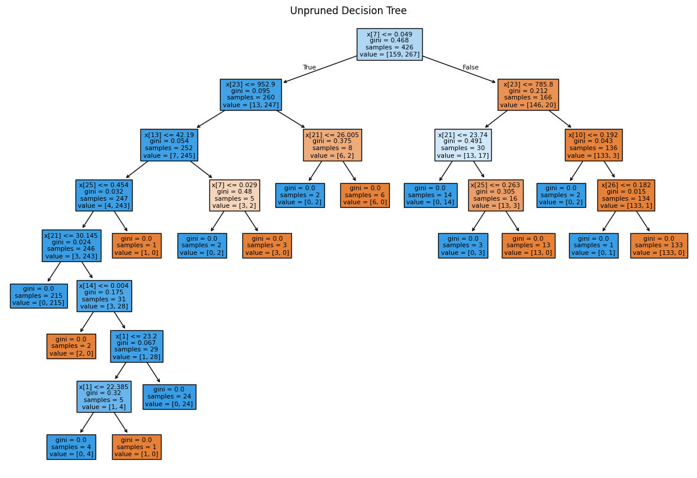
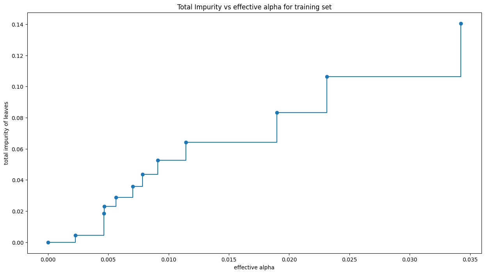
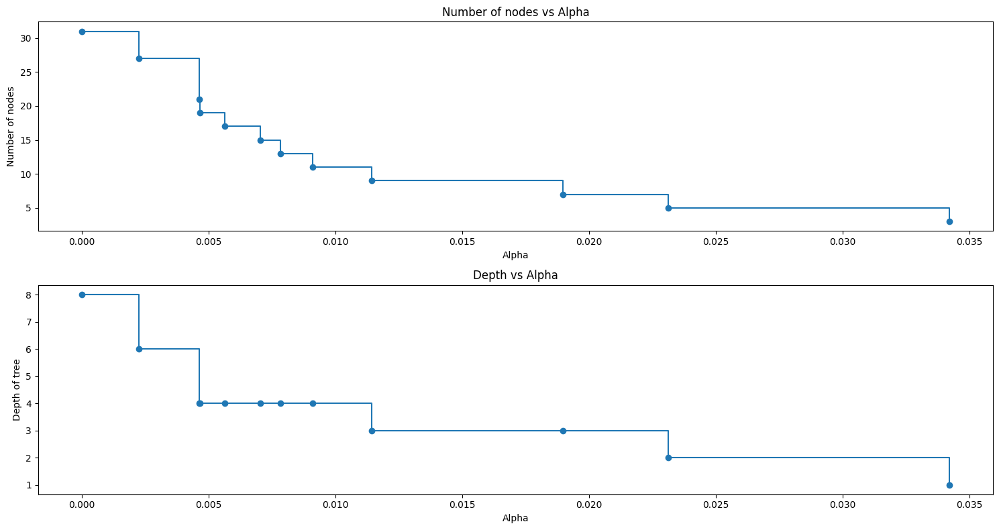
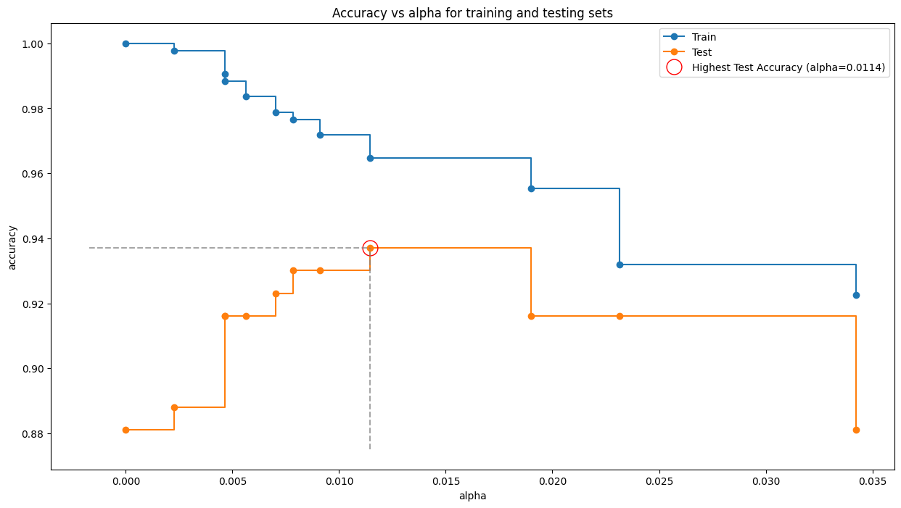

import sklearn
sklearn.__version__'1.6.1'.. _breast_cancer_dataset:
Breast cancer wisconsin (diagnostic) dataset
--------------------------------------------
**Data Set Characteristics:**
:Number of Instances: 569
:Number of Attributes: 30 numeric, predictive attributes and the class
:Attribute Information:
- radius (mean of distances from center to points on the perimeter)
- texture (standard deviation of gray-scale values)
- perimeter
- area
- smoothness (local variation in radius lengths)
- compactness (perimeter^2 / area - 1.0)
- concavity (severity of concave portions of the contour)
- concave points (number of concave portions of the contour)
- symmetry
- fractal dimension ("coastline approximation" - 1)
The mean, standard error, and "worst" or largest (mean of the three
worst/largest values) of these features were computed for each image,
resulting in 30 features. For instance, field 0 is Mean Radius, field
10 is Radius SE, field 20 is Worst Radius.
- class:
- WDBC-Malignant
- WDBC-Benign
:Summary Statistics:
===================================== ====== ======
Min Max
===================================== ====== ======
radius (mean): 6.981 28.11
texture (mean): 9.71 39.28
perimeter (mean): 43.79 188.5
area (mean): 143.5 2501.0
smoothness (mean): 0.053 0.163
compactness (mean): 0.019 0.345
concavity (mean): 0.0 0.427
concave points (mean): 0.0 0.201
symmetry (mean): 0.106 0.304
fractal dimension (mean): 0.05 0.097
radius (standard error): 0.112 2.873
texture (standard error): 0.36 4.885
perimeter (standard error): 0.757 21.98
area (standard error): 6.802 542.2
smoothness (standard error): 0.002 0.031
compactness (standard error): 0.002 0.135
concavity (standard error): 0.0 0.396
concave points (standard error): 0.0 0.053
symmetry (standard error): 0.008 0.079
fractal dimension (standard error): 0.001 0.03
radius (worst): 7.93 36.04
texture (worst): 12.02 49.54
perimeter (worst): 50.41 251.2
area (worst): 185.2 4254.0
smoothness (worst): 0.071 0.223
compactness (worst): 0.027 1.058
concavity (worst): 0.0 1.252
concave points (worst): 0.0 0.291
symmetry (worst): 0.156 0.664
fractal dimension (worst): 0.055 0.208
===================================== ====== ======
:Missing Attribute Values: None
:Class Distribution: 212 - Malignant, 357 - Benign
:Creator: Dr. William H. Wolberg, W. Nick Street, Olvi L. Mangasarian
:Donor: Nick Street
:Date: November, 1995
This is a copy of UCI ML Breast Cancer Wisconsin (Diagnostic) datasets.
https://goo.gl/U2Uwz2
Features are computed from a digitized image of a fine needle
aspirate (FNA) of a breast mass. They describe
characteristics of the cell nuclei present in the image.
Separating plane described above was obtained using
Multisurface Method-Tree (MSM-T) [K. P. Bennett, "Decision Tree
Construction Via Linear Programming." Proceedings of the 4th
Midwest Artificial Intelligence and Cognitive Science Society,
pp. 97-101, 1992], a classification method which uses linear
programming to construct a decision tree. Relevant features
were selected using an exhaustive search in the space of 1-4
features and 1-3 separating planes.
The actual linear program used to obtain the separating plane
in the 3-dimensional space is that described in:
[K. P. Bennett and O. L. Mangasarian: "Robust Linear
Programming Discrimination of Two Linearly Inseparable Sets",
Optimization Methods and Software 1, 1992, 23-34].
This database is also available through the UW CS ftp server:
ftp ftp.cs.wisc.edu
cd math-prog/cpo-dataset/machine-learn/WDBC/
.. dropdown:: References
- W.N. Street, W.H. Wolberg and O.L. Mangasarian. Nuclear feature extraction
for breast tumor diagnosis. IS&T/SPIE 1993 International Symposium on
Electronic Imaging: Science and Technology, volume 1905, pages 861-870,
San Jose, CA, 1993.
- O.L. Mangasarian, W.N. Street and W.H. Wolberg. Breast cancer diagnosis and
prognosis via linear programming. Operations Research, 43(4), pages 570-577,
July-August 1995.
- W.H. Wolberg, W.N. Street, and O.L. Mangasarian. Machine learning techniques
to diagnose breast cancer from fine-needle aspirates. Cancer Letters 77 (1994)
163-171.
DecisionTreeClassifier(random_state=0)In a Jupyter environment, please rerun this cell to show the HTML representation or trust the notebook.
DecisionTreeClassifier(random_state=0)
Test Accuracy -> 0.8811188811188811Text(0.5, 1.0, 'Unpruned Decision Tree')
The class:DecisionTreeClassifier takes parameters such as min_samples_leaf and max_depth to prevent a tree from overfitting.
{'ccp_alpha': 0.0, 'class_weight': None, 'criterion': 'gini', 'max_depth': None, 'max_features': None, 'max_leaf_nodes': None, 'min_impurity_decrease': 0.0, 'min_samples_leaf': 1, 'min_samples_split': 2, 'min_weight_fraction_leaf': 0.0, 'monotonic_cst': None, 'random_state': 0, 'splitter': 'best'}DecisionTreeClassifier(max_leaf_nodes=4, random_state=0)In a Jupyter environment, please rerun this cell to show the HTML representation or trust the notebook.
DecisionTreeClassifier(max_leaf_nodes=4, random_state=0)
Train Accuracy -> 0.9553990610328639Test accuracy -> 0.916083916083916Cost complexity pruning is used to control the size of a tree. In :class:DecisionTreeClassifier, this pruning technique is parameterized by the cost complexity parameter, ccp_alpha. Greater values of ccp_alpha increase the number of nodes pruned. Here we show the effect of ccp_alpha on regularizing the trees and how to choose a ccp_alpha based on validation scores.
{'ccp_alphas': array([0. , 0.00226647, 0.00464743, 0.0046598 , 0.0056338 ,
0.00704225, 0.00784194, 0.00911402, 0.01144366, 0.018988 ,
0.02314163, 0.03422475, 0.32729844]),
'impurities': array([0. , 0.00453294, 0.01847522, 0.02313502, 0.02876883,
0.03581108, 0.04365302, 0.05276704, 0.0642107 , 0.0831987 ,
0.10634033, 0.14056508, 0.46786352])}array([0. , 0.00226647, 0.00464743, 0.0046598 , 0.0056338 ,
0.00704225, 0.00784194, 0.00911402, 0.01144366, 0.018988 ,
0.02314163, 0.03422475, 0.32729844])array([0. , 0.00453294, 0.01847522, 0.02313502, 0.02876883,
0.03581108, 0.04365302, 0.05276704, 0.0642107 , 0.0831987 ,
0.10634033, 0.14056508, 0.46786352])Number of nodes in the last tree is: 1 with ccp_alpha: 0.3272984419327777import io
import imageio
import matplotlib.pyplot as plt
from sklearn import tree
images = []
for i, clf in enumerate(clfs):
buf = io.BytesIO()
plt.figure(figsize=(10, 8))
tree.plot_tree(clf, filled=True, fontsize=6)
plt.title(f"Tree with ccp_alpha={ccp_alphas[i]:.4f}")
plt.savefig(buf, format='png')
plt.close()
images.append(imageio.imread(buf))
imageio.mimsave('pruned_trees_in_memory.gif', images, duration=1000) # Increased duration to 10 seconds
from IPython.display import Image
Image(filename='pruned_trees_in_memory.gif',embed=True)<IPython.core.display.Image object>Text(0.5, 1.0, 'Total Impurity vs effective alpha for training set')
For this plot, we remove the last element in clfs and ccp_alphas, because it is the trivial tree with only one node. .
clfs = clfs[:-1]
ccp_alphas = ccp_alphas[:-1]
node_counts = [clf.tree_.node_count for clf in clfs]
depth = [clf.tree_.max_depth for clf in clfs]
fig, ax = plt.subplots(2, 1,figsize=(15, 8))
ax[0].plot(ccp_alphas, node_counts, marker="o", drawstyle="steps-post")
ax[0].set_xlabel("Alpha")
ax[0].set_ylabel("Number of nodes")
ax[0].set_title("Number of nodes vs Alpha")
ax[1].plot(ccp_alphas, depth, marker="o", drawstyle="steps-post")
ax[1].set_xlabel("Alpha")
ax[1].set_ylabel("Depth of tree")
ax[1].set_title("Depth vs Alpha")
fig.tight_layout()

train_scores = [clf.score(X_train, y_train) for clf in clfs]
test_scores = [clf.score(X_test, y_test) for clf in clfs]
fig, ax = plt.subplots(figsize=(15, 8))
ax.set_xlabel("alpha")
ax.set_ylabel("accuracy")
ax.set_title("Accuracy vs alpha for training and testing sets")
ax.plot(ccp_alphas, train_scores, marker='o', label="Train",
drawstyle="steps-post")
ax.plot(ccp_alphas, test_scores, marker='o', label="Test",
drawstyle="steps-post")
optimal_alpha_index = test_scores.index(max(test_scores))
optimal_alpha = ccp_alphas[optimal_alpha_index]
highest_test_score = test_scores[optimal_alpha_index]
ax.plot(optimal_alpha, highest_test_score, 'o', color='red', markersize=15, fillstyle='none', label=f'Highest Test Accuracy (alpha={optimal_alpha:.4f})')
ax.hlines(highest_test_score, ax.get_xlim()[0], optimal_alpha, color='gray', linestyle='--', alpha=0.7)
ax.vlines(optimal_alpha, ax.get_ylim()[0], highest_test_score, color='gray', linestyle='--', alpha=0.7)
ax.legend()
plt.show()
DecisionTreeClassifier(ccp_alpha=0.0114, random_state=0)In a Jupyter environment, please rerun this cell to show the HTML representation or trust the notebook.
DecisionTreeClassifier(ccp_alpha=0.0114, random_state=0)
Train Accuracy -> 0.971830985915493
Test Accuracy -> 0.9300699300699301